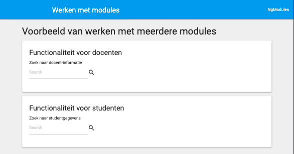
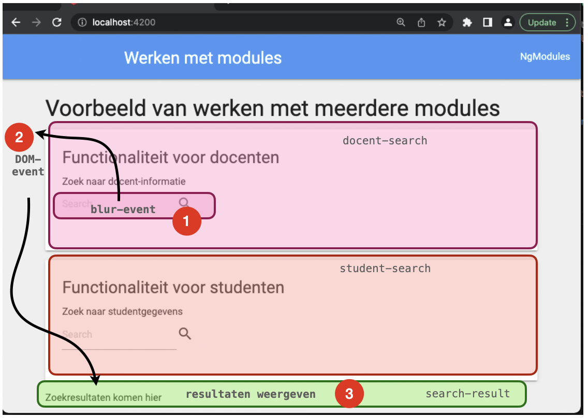
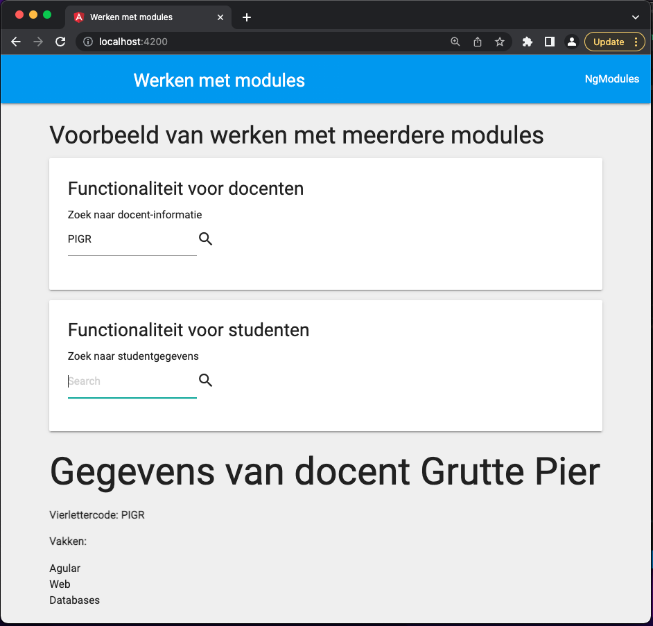
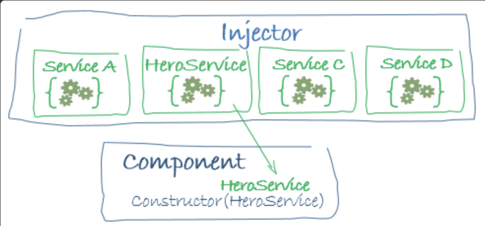

Practicum week 7¶
Vorige week hebben we via wat eenvoudige oefeningen kennis gemaakt met TypeScript en met Angular. We hebben gezien hoe je met behulp van de @Input() en de @Output() annotaties data tussen verschillende componenten kunt versturen en ontvangen. Deze week gaan we dieper in op componenten en data. We kijken hierbij hoe je gebruik kunt maken van DOM-events of van Services om data tussen componenten te delen.
Zorg ervoor dat je Angular (inclusief de CLI) op je lokale machine hebt draaien. Maak gebruik van ng new week7 om een nieuw project op te starten. Dit commando maakt een nieuwe directory (week7) voor je aan. Vervang de bestanden in de src-directory door de bestanden van deze week.
1: Native events¶
Opgave 1a: Native events¶
Deze opgave gaan we werken met modules. Een module kun je zien als een container waarin stukken code worden geplaatst die samen verantwoordelijk zijn voor een bepaalde functionaliteit. Dit kunnen componenten zijn, maar ook services, constanten, of andere stukken programmacode. Alle onderdelen binnen dezelfde module hebben dezelfde scope (namelijk de module en op die manier fungeert een module dan ook als een sandbox.
Het grootste deel van de infrastructuur is al voor je opgezet. Zoals je ziet zijn er in de directory app/cards twee componenten: docent-search en student-search. Deze twee bestanden vormen een soort kaartje waarvan de bezoeker van de site gebruik kan maken om gegevens van docenten en van (drum roll) studenten op te vragen. Bestudeer de code om je een beeld te vormen van hoe één en ander werkt.

Vorig week hebben we gezien dat je data van de ene naar de andere component kon verzenden door gebruik te maken van @Output() en @Input(). Op zich werkt dit prima, alleen is het probleem dat deze events niet bubbelen: als ze eenmaal door een component zijn afgevangen, houdt het doorsturen van dit Event ook op. Nu zou je natuurlijk dat proces weer kunnen herhalen, maar het is beter om gebruik te maken van native DOM-events, want die bubbelen wèl standaard.
In deze opgave gaan we de zoekterm die de bezoeker intypt doorsturen naar de results-component. Als je kijkt naar app.component.ts zie je dat dit een sibling is van de beide zoekkaartjes. De uitdaging is dus om de zoekterm en het zoektype (student of docent) naar deze sibling te krijgen. Zie onderstaande afbeelding door de flow:

Voeg aan de zoekkaart (app/shared/search-box.component.ts) een methode handleEvent() toe die luistert naar een blur-event op het input-veld en een click event op het loepje. Deze methode moet een custom DomElement uitsturen met als naam newdata. Dit event stuurt de string uit het inputveld en het type waarop wordt gezocht door: deze combinatie is weergegeven in de interface searchdata. Maak hierbij gebruik van het property ElementRef dat je in de constructor geïnjecteerd ziet worden. Het veld searchItem dat je hier zit staan, wordt door de betreffende zoekkaartje geïnitialiseerd (met 'docent' of 'student') Merk op dat het input-element van het formulier voorzien is van de identifier #searchbox.
Opdracht 1b: Afvangen¶
Omdat dit event helemaal doorloopt tot de bovenste component (app.component) kunnen we het daar ook opvangen. Zoals je kunt zien maken we daar al gebruik van de module search-result om de gevonden resultaten onderop de pagina weer te geven. Het is de bedoeling van deze opdracht om het event dat door de search-box wordt verstuurt wordt opgevangen door de app-component die het vervolgens doorstuurt aan de search-result-component.
Wanneer het customevent wordt uitgestuurd, moet deze app-component daarop reageren. Zorg er dus voor (in de html) dat dit event wordt afgevangen en dat er een methode in die component daarop reageert (maak gebruik van de (event)="handler()-syntax). Deze methode moet het veld searchdata zetten naar datgene wat er door het event wordt doorgestuurd.
Opdracht 1c: Doorsturen¶
Nu we het veld searchdata van de app.component aanpassen op het moment dat er een customevent wordt doorgestuurd, kunnen we dit veld gebruiken om de corresponderende waarde in de search-result-component te zetten. Maak gebruik van de [attribute]="value"-syntax om dit te bewerkstelligen.
Implementeer vervolgens (en tenslotte) de methode ngOnChanges in de search-result-component. Deze component heeft al beschikkig over de student- en docentdata, dus het enige wat hier moet doen is checken of er gezocht wordt op een student of een docent en vervolgende de betreffende array filteren op respectievelijk het studentnummer of de vierlettercode. Bekijk de data in data.ts om te zien hier deze arrays eruit zien.
Geeft het veld docentdata of studentdata de waarde van het gevonden resultaat (en de andere array op undefined) en zoek een student of docent. Als het goed is, krijg je nu de resultaten van je zoekopdracht te zien.

Opdracht 2: Services¶
Hoewel dit werken met events op zich wel werkt, is het (zoals je merkt) behoorlijk omslachtig en foutgevoelig. Om het werken met data makkelijker te maken, wordt in de regel gebruik gemaakt van services – een techniek die we in web 2 ook al zijn tegengekomen. Een service kun je injecteren in de componenten die er gebruik van moeten maken (ze worden dan ook voorzien van de annotatie @Injectable).

Opdracht 2a: maken van een service¶
Maak met de angular CLI een service data. Bestudeer de code die voor je gegenereert wordt:
% ng generate service data
CREATE src/app/data.service.spec.ts (347 bytes)
CREATE src/app/data.service.ts (133 bytes)
%
spec.ts
Dat tweede bestand spec.ts is het bestand dat je kunt gebruiken voor het testen van de gegenereerde service. Je kunt die eventueel wel weer weghalen, want testen doen we natuurlijk niet.
Feitelijk doet deze service hetzelfde als wat je net in opdracht 1c hebt gedaan: het bevragen van de data op basis van een searchdata-object en dat opslaan in de corresponderende velden (docentdata of studentdata). Je kunt dus grote delen van deze code kopiëren in een methode getData(what:searchdata) die je in deze service moet maken.
2b: publish-subscribe¶
Zoals tijdens de theorieles is besproken, kun je werken met services zien als een vorm van publish-subscribe. Dat betekent dat je de service moet voorzien van een attribuut waar andere componenten zich op kunne abonneren. In het geval van Angular wordt hierbij gebruik gemaakt van RxJS BehaviorSubject. Je kunt deze properties gebruiken om wijzigingen in een andere property te versturen. Bekijk onderstaande (pseudo-)code om hier een beeld bij te krijgen.
@Injectable()
class Publisher {
// maak property om waarden in op te slaan
name:String = ''
// maak property waar anderen naar kunnen luisteren
public name$ = new BehaviorSubject<String>(this.name)
newName(value:String:void {
this.name = value
// verstuur een bericht aan de subscribers
this.name$.next()
}
}
class Subscriber {
constructor (private publisher:Publisher) { }
ngOnInit () {
// luister naar wijzigingen in publisher.name$
this.publisher.name$.subscribe ( data => console.log(data) )
}
}
Gebruik deze techniek om de data van studenten en docenten via de service beschikbaar te maken aan de result-component (dat wordt in dit verhaal dus de subscriber).
Opdracht 2c: weergeven van de data¶
Injecteer vervolgens de service in de search-component en zorg ervoor dat de methode handleEvent nu geen gebruik meer maakt van een customevent, maar juist van de method getData() in de service. Als je het goed hebt gedaan, zie je nu opnieuw de resultaten van de zoekopdracht in het veld onderaan de pagina verschijnen.
Opdracht 2d: online data¶
Natuurlijk is het meestal niet zo dat de data die getoond moet worden op de frontend zelf beschikbaar is. Normaliter maak je gebruik van een backend, waar een database achter zit. In deze laatste opdracht gaan we deze stap zetten.
In de bestanden van deze week zit ook een directory backend, waarin een heel eenvoudig php-script dezelfde data beschikbaar stelt als die in het bestand data.ts. Start in deze directory een php-server op (php -S localhost:8080) en vervang de code in de dataservice door een fetch naar deze backend. Het endpoint data.php?what=docent geeft je de docentdata terug en het endpoint data.php?what=student de studentdata.